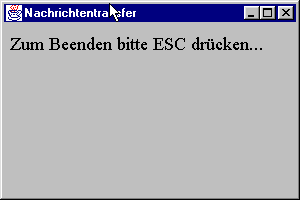

28.2 Entwurfsmuster für den Nachrichtenverkehr
Wir wollen uns in diesem Abschnitt damit beschäftigen, die oben
erwähnten Entwurfsmuster für die Abwicklung des Nachrichtenverkehrs
in Java-Programmen vorzustellen. Wie bereits erwähnt, hat jedes
dieser Verfahren seine ganz spezifischen Vor- und Nachteile und ist
für verschiedene Programmieraufgaben unterschiedlich gut geeignet.
Als Basis für unsere Experimente wollen wir ein einfaches Programm
schreiben, das die folgenden Anforderungen erfüllt:
- Nach dem Start soll das Programm ein Fenster mit dem Titel »Nachrichtentransfer«
auf dem Bildschirm anzeigen.
- Das Fenster soll einen grauen Hintergrund haben und in der Client-Area
die Meldung »Zum Beenden bitte ESC drücken ...« anzeigen.
- Nach Drücken der Taste [ESC]
soll das Fenster geschlossen und das Programm beendet werden. Andere
Tastendrücke, Mausklicks oder ähnliche Ereignisse werden
ignoriert.
Basis der Programme ist das folgende Listing:
001 /* Listing2801.java */
002
003 import java.awt.*;
004 import java.awt.event.*;
005
006 public class Listing2801
007 extends Frame
008 {
009 public static void main(String[] args)
010 {
011 Listing2801 wnd = new Listing2801();
012 }
013
014 public Listing2801()
015 {
016 super("Nachrichtentransfer");
017 setBackground(Color.lightGray);
018 setSize(300,200);
019 setLocation(200,100);
020 setVisible(true);
021 }
022
023 public void paint(Graphics g)
024 {
025 g.setFont(new Font("Serif",Font.PLAIN,18));
026 g.drawString("Zum Beenden bitte ESC drücken...",10,50);
027 }
028 }
|
Listing2801.java |
Listing 28.1: Basisprogramm für den Nachrichtentransfer
Die Ausgabe des Programms ist:

Abbildung 28.3: Das Programm für den Nachrichtentransfer
28.2.1 Variante 1: Implementierung eines EventListener-Interface
Bei der ersten Variante gibt es nur eine einzige Klasse, Listing2802.
Sie ist einerseits eine Ableitung der Klasse Frame,
um ein Fenster auf dem Bildschirm darzustellen und zu beschriften.
Andererseits implementiert sie das Interface KeyListener,
das die Methoden keyPressed,
keyReleased
und keyTyped
definiert. Der eigentliche Code zur Reaktion auf die Taste [ESC]
steckt in der Methode keyPressed,
die immer dann aufgerufen wird, wenn eine Taste gedrückt wurde.
Mit der Methode getKeyCode
der Klasse KeyEvent
wird auf den Code der gedrückten Taste zugegriffen und dieser
mit der symbolischen Konstante VK_ESCAPE
verglichen. Stimmen beide überein, wurde [ESC]
gedrückt und das Programm kann beendet werden.
001 /* Listing2802.java */
002
003 import java.awt.*;
004 import java.awt.event.*;
005
006 public class Listing2802
007 extends Frame
008 implements KeyListener
009 {
010 public static void main(String[] args)
011 {
012 Listing2802 wnd = new Listing2802();
013 }
014
015 public Listing2802()
016 {
017 super("Nachrichtentransfer");
018 setBackground(Color.lightGray);
019 setSize(300,200);
020 setLocation(200,100);
021 setVisible(true);
022 addKeyListener(this);
023 }
024
025 public void paint(Graphics g)
026 {
027 g.setFont(new Font("Serif",Font.PLAIN,18));
028 g.drawString("Zum Beenden bitte ESC drücken...",10,50);
029 }
030
031 public void keyPressed(KeyEvent event)
032 {
033 if (event.getKeyCode() == KeyEvent.VK_ESCAPE) {
034 setVisible(false);
035 dispose();
036 System.exit(0);
037 }
038 }
039
040 public void keyReleased(KeyEvent event)
041 {
042 }
043
044 public void keyTyped(KeyEvent event)
045 {
046 }
047 }
|
Listing2802.java |
Listing 28.2: Implementieren eines Listener-Interface
Die Verbindung zwischen der Ereignisquelle (in diesem Fall der Fensterklasse
Listing2802) und dem Ereignisempfänger
(ebenfalls die Klasse Listing2802)
erfolgt über den Aufruf der Methode addKeyListener
der Klasse Frame.
Alle Tastaturereignisse werden dadurch an die Fensterklasse selbst
weitergeleitet und führen zum Aufruf der Methoden keyPressed,
keyReleased
oder keyTyped
des Interface KeyListener.
Diese Implementierung ist sehr naheliegend, denn sie ist einfach zu
implementieren und erfordert keine weiteren Klassen. Nachteilig ist
dabei allerdings:
- Es besteht keine Trennung zwischen GUI-Code und Applikationslogik.
Dies kann große Programme unübersichtlich und schwer wartbar
machen.
- Für jeden Ereignistyp muss eine passende Listener-Klasse
registriert werden. Da viele der EventListener-Interfaces
mehr als eine Methode definieren, werden dadurch schnell viele leere
Methodenrümpfe in der Fensterklasse zu finden sein. In diesem
Beispiel sind es schon keyReleased
und keyTyped,
bei zusätzlichen Interfaces würden schnell weitere hinzukommen.
Diese Technik ist also höchstens für kleine Programme geeignet,
die nur begrenzt erweitert werden müssen. Durch die Vielzahl
leerer Methodenrümpfe können aber auch kleine Programme
schnell unübersichtlich werden.
28.2.2 Variante 2: Lokale und anonyme Klassen
Die zweite Alternative bietet eine bessere Lösung. Sie basiert
auf der Verwendung lokaler bzw. anonymer Klassen und
kommt ohne die Nachteile der vorigen Version aus. Sie ist das in der
Dokumentation des JDK empfohlene Entwurfsmuster für das Event-Handling
in kleinen Programmen oder bei Komponenten mit einfacher Nachrichtenstruktur.
Vor ihrem Einsatz sollte man allerdings das Prinzip lokaler und anonymer
Klassen kennenlernen, das in Abschnitt 11.1
vorgestellt wurde. Wer diesen Abschnitt noch nicht gelesen hat, sollte
das jetzt nachholen.
Lokale Klassen
Die Anwendung lokaler Klassen für die Ereignisbehandlung besteht
darin, mit ihrer Hilfe die benötigten EventListener
zu implementieren. Dazu wird in dem GUI-Objekt, das einen Event-Handler
benötigt, eine lokale Klasse definiert und aus einer passenden
Adapterklasse abgeleitet. Nun braucht nicht mehr das gesamte
Interface implementiert zu werden (denn die Methodenrümpfe werden
ja aus der Adapterklasse geerbt), sondern lediglich die tatsächlich
benötigten Methoden. Da die lokale Klasse zudem auf die Membervariablen
und Methoden der Klasse zugreifen kann, in der sie definiert wurde,
lassen sich auf diese Weise sehr schnell die benötigten Ereignisempfänger
zusammenbauen.
Das folgende Beispiel definiert eine lokale Klasse MyKeyListener,
die aus KeyAdapter
abgeleitet wurde und auf diese Weise das KeyListener-Interface
implementiert. Sie überlagert lediglich die Methode keyPressed,
um auf das Drücken einer Taste zu reagieren. Als lokale Klasse
hat sie außerdem Zugriff auf die Methoden der umgebenden Klasse
und kann somit durch Aufruf von setVisible
und dispose
das Fenster, in dem sie als Ereignisempfänger registriert wurde,
schließen. Die Registrierung der lokalen Klasse erfolgt durch
Aufruf von addKeyListener,
bei dem gleichzeitig eine Instanz der lokalen Klasse erzeugt wird.
Als lokale Klasse ist MyKeyListener
überall innerhalb von Listing2803
sichtbar und kann an beliebiger Stelle instanziert werden.
001 /* Listing2803.java */
002
003 import java.awt.*;
004 import java.awt.event.*;
005
006 public class Listing2803
007 extends Frame
008 {
009 public static void main(String[] args)
010 {
011 Listing2803 wnd = new Listing2803();
012 }
013
014 public Listing2803()
015 {
016 super("Nachrichtentransfer");
017 setBackground(Color.lightGray);
018 setSize(300,200);
019 setLocation(200,100);
020 setVisible(true);
021 addKeyListener(new MyKeyListener());
022 }
023
024 public void paint(Graphics g)
025 {
026 g.setFont(new Font("Serif",Font.PLAIN,18));
027 g.drawString("Zum Beenden bitte ESC drücken...",10,50);
028 }
029
030 class MyKeyListener
031 extends KeyAdapter
032 {
033 public void keyPressed(KeyEvent event)
034 {
035 if (event.getKeyCode() == KeyEvent.VK_ESCAPE) {
036 setVisible(false);
037 dispose();
038 System.exit(0);
039 }
040 }
041 }
042 }
|
Listing2803.java |
Listing 28.3: Verwendung lokaler Klassen
Der Vorteil dieser Vorgehensweise ist offensichtlich: Es werden keine
unnützen Methodenrümpfe erzeugt, aber trotzdem verbleibt
der Ereignisempfängercode wie im vorigen Beispiel innerhalb der
Ereignisquelle. Dieses Verfahren ist also immer dann gut geeignet,
wenn es von der Architektur oder der Komplexität der Ereignisbehandlung
her sinnvoll ist, Quelle und Empfänger zusammenzufassen.
Anonyme Klassen
Das folgende Beispiel ist eine leichte Variation des vorigen. Es zeigt
die Verwendung einer anonymen Klasse als Ereignisempfänger, die
aus KeyAdapter
abgeleitet wurde. Zum Instanzierungszeitpunkt erfolgt die Definition
der überlagernden Methode keyPressed,
in der der Code zur Reaktion auf das Drücken der Taste [ESC]
untergebracht wird.
001 /* Listing2804.java */
002
003 import java.awt.*;
004 import java.awt.event.*;
005
006 public class Listing2804
007 extends Frame
008 {
009 public static void main(String[] args)
010 {
011 Listing2804 wnd = new Listing2804();
012 }
013
014 public Listing2804()
015 {
016 super("Nachrichtentransfer");
017 setBackground(Color.lightGray);
018 setSize(300,200);
019 setLocation(200,100);
020 setVisible(true);
021 addKeyListener(
022 new KeyAdapter() {
023 public void keyPressed(KeyEvent event)
024 {
025 if (event.getKeyCode() == KeyEvent.VK_ESCAPE) {
026 setVisible(false);
027 dispose();
028 System.exit(0);
029 }
030 }
031 }
032 );
033 }
034
035 public void paint(Graphics g)
036 {
037 g.setFont(new Font("Serif",Font.PLAIN,18));
038 g.drawString("Zum Beenden bitte ESC drücken...",10,50);
039 }
040 }
|
Listing2804.java |
Listing 28.4: Verwendung einer anonymen Klasse als Ereignishandler
Vorteilhaft bei dieser Vorgehensweise ist der verminderte Aufwand,
denn es muss keine separate Klassendefinition angelegt werden. Stattdessen
werden die wenigen Codezeilen, die zur Anpassung der Adapterklasse
erforderlich sind, dort eingefügt, wo die Klasse instanziert
wird, nämlich beim Registrieren des Nachrichtenempfängers.
Anonyme Klassen haben einen ähnlichen Einsatzbereich wie lokale,
empfehlen sich aber vor allem, wenn sehr wenig Code für den Ereignisempfänger
benötigt wird. Bei aufwändigeren Ereignisempfängern
ist die explizite Definition einer benannten Klasse dagegen vorzuziehen.
28.2.3 Variante 3: Trennung von GUI- und Anwendungscode
Wir hatten am Anfang darauf hingewiesen, dass in größeren
Programmen eine Trennung zwischen Programmcode für die Oberfläche
und solchem für die Anwendungslogik wünschenswert ist. Dadurch
wird eine bessere Modularisierung des Programms erreicht und der Austausch
oder die Erweiterung von Teilen des Programms wird erleichtert.
Das nachfolgende Beispiel zeigt diese Vorgehensweise, indem es unser
Beispielprogramm in die drei Klassen Listing2805,
MainFrameCommand und MainFrameGUI
aufteilt. Listing2805 enthält
nur noch die main-Methode
und dient lediglich dazu, die anderen beiden Klassen zu instanzieren.
MainFrameGUI realisiert die
GUI-Funktionalität und stellt das Fenster auf dem Bildschirm
dar. MainFrameCommand spielt
die Rolle des Kommandointerpreters, der immer dann aufgerufen wird,
wenn im Fenster ein Tastaturereignis aufgetreten ist.
Die Verbindung zwischen beiden Klassen erfolgt durch Aufruf der Methode
addKeyListener
in MainFrameGUI, an die das
an den Konstruktor übergebene MainFrameCommand-Objekt
weitergereicht wird. Dazu ist es erforderlich, dass das Hauptprogramm
den Ereignisempfänger cmd
zuerst instanziert, um ihn bei der Instanzierung des GUI-Objekts gui
übergeben zu können.
001 /* Listing2805.java */
002
003 import java.awt.*;
004 import java.awt.event.*;
005
006 public class Listing2805
007 {
008 public static void main(String[] args)
009 {
010 MainFrameCommand cmd = new MainFrameCommand();
011 MainFrameGUI gui = new MainFrameGUI(cmd);
012 }
013 }
014
015 class MainFrameGUI
016 extends Frame
017 {
018 public MainFrameGUI(KeyListener cmd)
019 {
020 super("Nachrichtentransfer");
021 setBackground(Color.lightGray);
022 setSize(300,200);
023 setLocation(200,100);
024 setVisible(true);
025 addKeyListener(cmd);
026 }
027
028 public void paint(Graphics g)
029 {
030 g.setFont(new Font("Serif",Font.PLAIN,18));
031 g.drawString("Zum Beenden bitte ESC drücken...",10,50);
032 }
033 }
034
035 class MainFrameCommand
036 extends KeyAdapter
037 {
038 public void keyPressed(KeyEvent event)
039 {
040 Frame source = (Frame)event.getSource();
041 if (event.getKeyCode() == KeyEvent.VK_ESCAPE) {
042 source.setVisible(false);
043 source.dispose();
044 System.exit(0);
045 }
046 }
047 }
|
Listing2805.java |
Listing 28.5: Trennung von GUI- und Anwendungslogik
Diese Designvariante ist vorwiegend für größere Programme
geeignet, bei denen eine Trennung von Programmlogik und Oberfläche
sinnvoll ist. Sie entspricht in groben Zügen dem Mediator-Pattern,
das in »Design-Patterns« von Gamma et al. beschrieben wird.
Für sehr kleine Programme oder solche, die wenig Ereigniscode
haben, sollte dagegen eher eine der vorherigen Varianten angewendet
werden.
Natürlich erhebt das vorliegende Beispielprogramm nicht den Anspruch,
unverändert in ein sehr großes Programm übernommen
zu werden. Es soll lediglich die Möglichkeit der Trennung von
Programmlogik und Oberfläche in einem großen Programm mit
Hilfe der durch das Event-Handling vorgegebenen Möglichkeiten
aufzeigen. Eine sinnvolle Erweiterung dieses Konzepts könnte
darin bestehen, weitere Modularisierungen vorzunehmen (z.B. analog
dem MVC-Konzept von Smalltalk, bei
dem GUI-Anwendungen in Model-, View- und Controller-Layer
aufgesplittet werden, oder auch durch Abtrennen spezialisierter Kommandoklassen).
Empfehlenswert ist in diesem Zusammenhang die Lektüre der JDK-Dokumentation,
die ein ähnliches Beispiel in leicht veränderter Form enthält.
28.2.4 Variante 4: Überlagern der Event-Handler in den Komponenten
Als letzte Möglichkeit, auf Nachrichten zu reagieren, soll das
Überlagern der Event-Handler in den Ereignisquellen selbst aufgezeigt
werden. Jede Ereignisquelle besitzt eine Reihe von Methoden, die für
das Aufbereiten und Verteilen der Nachrichten zuständig sind.
Soll eine Nachricht weitergereicht werden, so wird dazu zunächst
innerhalb der Nachrichtenquelle die Methode processEvent
aufgerufen. Diese verteilt die Nachricht anhand ihres Typs an spezialisierte
Methoden, deren Name sich nach dem Typ der zugehörigen Ereignisklasse
richtet. So ist beispielsweise die Methode processActionEvent
für das Handling von Action-Events und processMouseEvent
für das Handling von Mouse-Events zuständig:
protected void processEvent(AWTEvent e)
protected void processComponentEvent(ComponentEvent e)
protected void processFocusEvent(FocusEvent e)
...
|
java.awt.Component |
Die Methode enableEvents
erwartet als Argument eine Maske, die durch eine bitweise Oder-Verknüpfung
der passenden Maskenkonstanten aus der Klasse AWTEvent
zusammengesetzt werden kann:
Die verfügbaren Masken sind analog zu den Ereignistypen benannt
und heißen ACTION_EVENT_MASK,
ADJUSTMENT_EVENT_MASK,
COMPONENT_EVENT_MASK
usw.
Das folgende Beispiel überlagert die Methode processKeyEvent
in der Klasse Frame
(die sie aus Component
geerbt hat). Durch Aufruf von enableEvents
wird die Weiterleitung der Tastaturereignisse aktiviert und das Programm
zeigt dasselbe Verhalten wie die vorigen Programme.
001 /* Listing2806.java */
002
003 import java.awt.*;
004 import java.awt.event.*;
005
006 public class Listing2806
007 extends Frame
008 {
009 public static void main(String[] args)
010 {
011 Listing2806 wnd = new Listing2806();
012 }
013
014 public Listing2806()
015 {
016 super("Nachrichtentransfer");
017 setBackground(Color.lightGray);
018 setSize(300,200);
019 setLocation(200,100);
020 setVisible(true);
021 enableEvents(AWTEvent.KEY_EVENT_MASK);
022 }
023
024 public void paint(Graphics g)
025 {
026 g.setFont(new Font("Serif",Font.PLAIN,18));
027 g.drawString("Zum Beenden bitte ESC drücken...",10,50);
028 }
029
030 public void processKeyEvent(KeyEvent event)
031 {
032 if (event.getID() == KeyEvent.KEY_PRESSED) {
033 if (event.getKeyCode() == KeyEvent.VK_ESCAPE) {
034 setVisible(false);
035 dispose();
036 System.exit(0);
037 }
038 }
039 super.processKeyEvent(event);
040 }
041 }
|
Listing2806.java |
Listing 28.6: Überlagern der Komponenten-Event-Handler
Diese Art der Ereignisbehandlung ist nur sinnvoll, wenn Fensterklassen
oder Dialogelemente überlagert werden und ihr Aussehen oder Verhalten
signifikant verändert wird. Alternativ könnte natürlich
auch in diesem Fall ein EventListener
implementiert und die entsprechenden Methoden im Konstruktor der abgeleiteten
Klasse registriert werden.
28.2.5 Ausblick
Die hier vorgestellten Entwurfsmuster geben einen Überblick über
die wichtigsten Designtechniken für das Event-Handling in Java-Programmen.
Während die ersten beiden Beispiele für kleine bis mittelgroße
Programme gut geeignet sind, kommen die Vorteile der in Variante 3
vorgestellten Trennung zwischen GUI-Code und Anwendungslogik vor allem
bei größeren Programmen zum Tragen. Die vierte Variante
ist vornehmlich für Spezialfälle geeignet und sollte entsprechend
umsichtig eingesetzt werden. Ein Beispiel dazu findet sich in Listing 33.1.
Kapitel 29 widmet
sich den wichtigsten Low-Level-Events und demonstriert den genauen
Einsatz ihrer Listener- und Event-Methoden anhand vieler Beispiele.
In späteren Kapiteln werden die meisten der High-Level-Events
erläutert. Sie werden in der Regel dort eingeführt, wo ihr
Einsatz durch das korrespondierende Dialogelement motiviert wird.
So erläutert Kapitel 30
in Zusammenhang mit der Vorstellung von Menüs die Action-Ereignisse
und in Kapitel 32
werden Ereignisse erläutert, die von den dort vorgestellten Dialogelementen
ausgelöst werden.